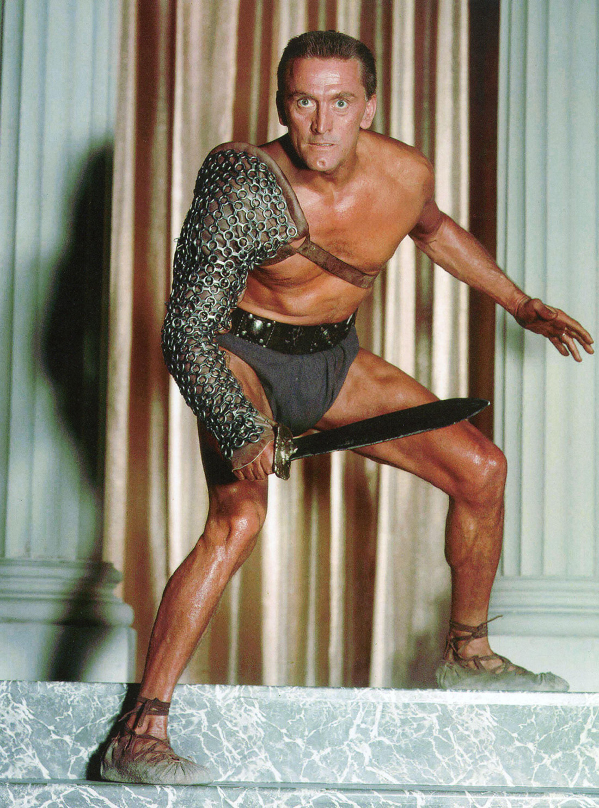

Espartaco
Espartaco (Spartacus) es una película estadounidense de 1960 dirigida por Stanley Kubrick y basada en la novela histórica homónima de Howard Fast. Contó con la actuación de Kirk Douglas, Laurence Olivier, Jean Simmons, John Gavin, Charles Laughton, Peter Ustinov, Herbert Lom, Woody Strode, y Tony Curtis. El guion, escrito por Dalton Trumbo, retrata la figura de Espartaco y los hechos ocurridos durante la tercera guerra servil. La película fue galardonada con 4 premios Óscar, y otros 4 premios más.
Forma parte del AFI's 10 Top 10 en la categoría de "Películas épicas". En el 2017, la película fue considerada «cultural, histórica y estéticamente significativa» por la Biblioteca del Congreso de Estados Unidos y seleccionada para su preservación en el National Film Registry.
Al principio la película iba a ser dirigida por Anthony Mann. Sin embargo él se peleó con Kirk Douglas, por lo que finalmente Kubrick ocupó su lugar, el cual casi también abandona. Cabe también destacar que Jean Simmons accedió interpretar el papel de Varinia después de que éste hubiese sido rechazado por otras actrices como Elsa Martinelli, Ingrid Bergman y Jeanne Moreau. Peña del Cerro (Colmenar Viejo) en ella se filmó una de las batallas de la película. Fue rodada en diversas localizaciones de España, entre ellas: la ciudad española de Alcalá de Henares (concretamente en la Puerta de Madrid, el Paseo de los Curas y los Cerros de Alcalá); o la Peña del Cerro en Colmenar Viejo. También se filmó en los estudios de la Universal. En la posproducción, Douglas era consciente de que Kubrick tenía la intención de atribuirse el guion de la película, aunque este había sido adaptado de la novela de Howard Fast por Dalton Trumbo, puesto en la lista negra de Hollywood durante el macartismo. Douglas, poderoso públicamente, se opuso a la exclusión de Trumbo, y cuando el nombre de este apareció en los créditos, la lista negra de Hollywood fue definitivamente cancelada
Después de su estreno en 1960 fue proyectada nuevamente en 1967, con 23 minutos menos que la proyección original, y otra vez, en 1991, en la que se restauraban esos 23 minutos más otros 14 que habían sido censurados antes de la proyección original. La adición incluía varias secuencias de batallas violentas, así como una escena en el baño en la que Craso, general y patricio romano, en un intento de seducir a su esclavo Antonino (T. Curtis), usa la analogía de «comer ostras» y «comer caracoles» para expresar su opinión de que la querencia carnal es más cuestión de gusto que de moralidad. Cuando la película fue restaurada, dos años después de la muerte de Olivier, faltaba el audio original del diálogo de esta escena, por lo que tuvo que redoblarse. Tony Curtis pudo doblar su papel, pero la voz de Laurence Olivier tuvo que ser imitada por Anthony Hopkins.
1968